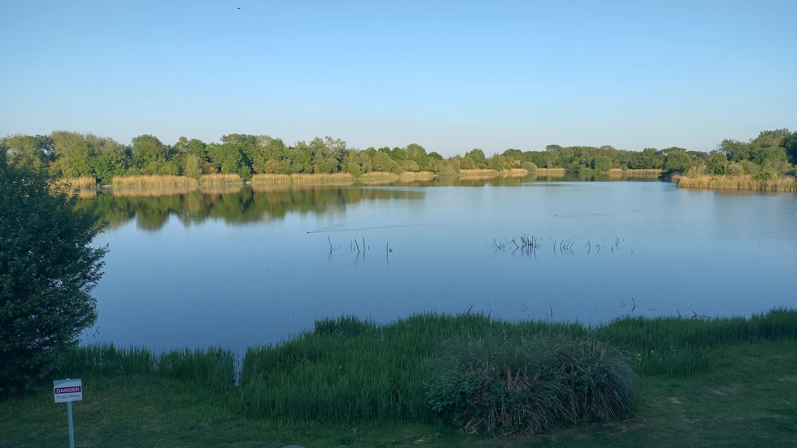
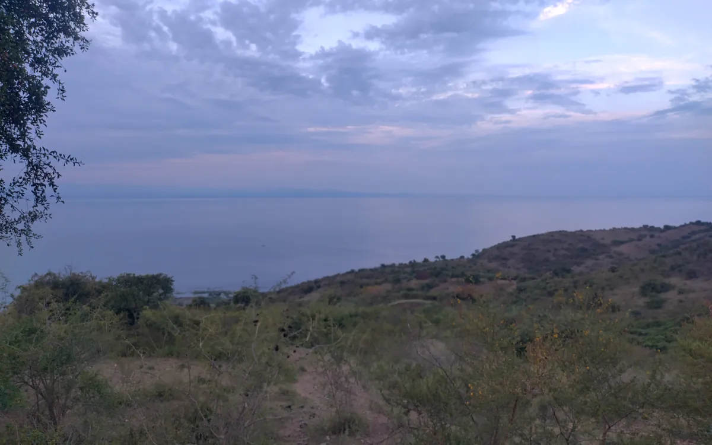
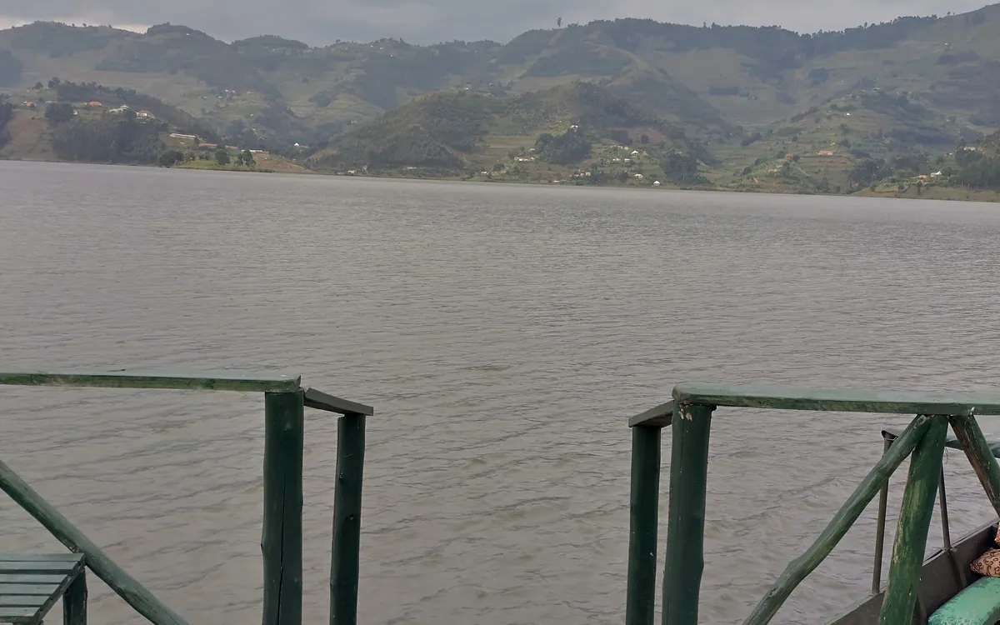

Investment research
Better analysis. Smarter capital allocation.
KENNETH S. LEGESI, CFA · INVESTOR / ENGINEER / BUILDER
I explore ideas at the intersection of capital, technology and development—with a focus on Africa and beyond.

A LITTLE ABOUT ME
I’m an engineer by training and an investor by profession. My work spans investment research, capital markets, infrastructure and technology. I’m interested in how systems work—and how we can build them better.
Read more about my background →FOCUS AREAS
Different disciplines, connected by a common goal: turning useful ideas into lasting value.
Better analysis. Smarter capital allocation.
Deeper markets. More participation.
Projects that unlock productive potential.
Tools for access, intelligence and efficiency.
Good ideas become stronger together.
FEATURED

CAPITAL MARKETS
Ideas and frameworks for mobilising capital and deepening productive investment.
Explore project →
INFRASTRUCTURE
Exploring how physical assets and financing structures can support development.
Explore project →
INVESTMENT RESEARCH
Transparent research, valuation frameworks and questions worth debating.
Explore research →Landscape images are personal photographs and do not depict the named projects; the research thumbnail remains illustrative.
LET'S CONNECT
I welcome thoughtful questions, research contributions and conversations about potential collaborations.